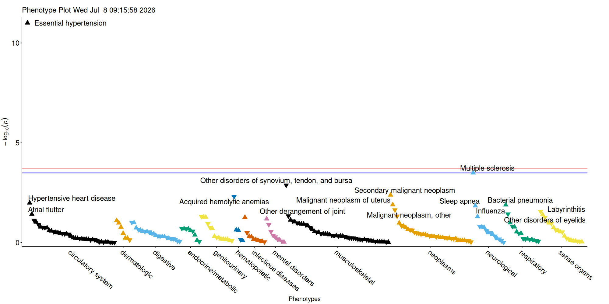
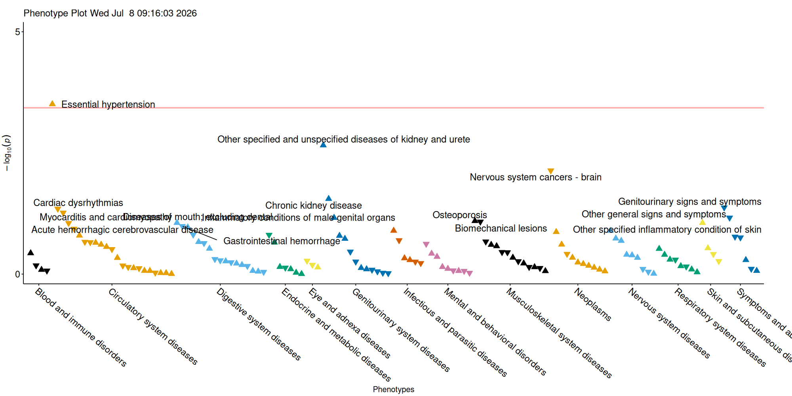

library(ICD10AnalysisToolbox)
#devtools::load_all()The code below generates example input and showcases the workflow.
icd_table <- data.frame(ID=paste0("ID", sample(1:1000, 20000, replace = T, prob = seq(from = 0, to = 1, length.out=1000))),
ICD10=sample(icd10_list, 20000, replace = T),
date_event=sample(seq(as.Date('2000/01/01'), as.Date('2020/01/01'), by="day"), 20000, replace = T))
lc_table <- data.frame(ID=paste0("ID", 1:1000),
date_baseline=as.Date('2007/01/01'),
date_contact_loss=sample(seq(as.Date('2007/01/02'), as.Date('2025/01/01'), by="day"), 1000, replace = T))From this ICD-10 cohort data, we extract Phecode and CCSR terms.
outcomes_phecode <- time_to_event_phecode(dataframe_ID_BL = lc_table, icd_table_long = icd_table, tbl_mortality_contact = lc_table, censor_time = 10)
outcomes_CCSR <- time_to_event_CCSR(dataframe_ID_BL = lc_table, icd_table_long = icd_table, tbl_mortality_contact = lc_table, censor_time = 10)Next, we simulate a marker associated with hypertension.
outcomes_phecode$marker[outcomes_phecode$phecode_401_1_event==0] <- rnorm(length(outcomes_phecode$ID[outcomes_phecode$phecode_401_1_event==0]))
outcomes_phecode$marker[outcomes_phecode$phecode_401_1_event==1] <- rnorm(length(outcomes_phecode$ID[outcomes_phecode$phecode_401_1_event==1]))+1
outcomes_CCSR$marker[outcomes_CCSR$CCSR_CIR007_event==0] <- rnorm(length(outcomes_CCSR$ID[outcomes_CCSR$CCSR_CIR007_event==0]))
outcomes_CCSR$marker[outcomes_CCSR$CCSR_CIR007_event==1] <- rnorm(length(outcomes_CCSR$ID[outcomes_CCSR$CCSR_CIR007_event==1]))+1Now we can run our analysis across outcomes.
phecode_results <- phewas_analysis_phecodes(outcomes_phecode[c("ID", "marker")], outcomes_phecode, save_as = "test", adj_vars = NULL,
target = "marker", return_tables = TRUE)
#> Scale for shape is already present.
#> Adding another scale for shape, which will replace the existing scale.
#> Running regression 171 times..
#> Reformatting output..
#> Variables significantly related after multiple testing correction: 0
#> Scale for shape is already present.
#> Adding another scale for shape, which will replace the existing scale.
CCSR_results <- phewas_analysis_CCSR(outcomes_CCSR[c("ID", "marker")], outcomes_CCSR, save_as = "test_CCSR", adj_vars = NULL,
target = "marker", return_tables = TRUE)
#> Scale for shape is already present.
#> Adding another scale for shape, which will replace the existing scale.
#> Running regression 112 times..
#> Reformatting output..
#> Variables significantly related after multiple testing correction: 0
#> Scale for shape is already present.
#> Adding another scale for shape, which will replace the existing scale.
head(phecode_results[[1]][order(phecode_results[[1]]$p, decreasing = F),], 20)
#> Phecode_char HR negOR LCI UCI p nevent
#> 101 phecode_401_1 3.3851848 0.2954048 2.3829713 4.8089023 9.900820e-12 32
#> 70 phecode_335 2.6148552 0.3824304 1.5491143 4.4137917 3.199912e-04 13
#> 222 phecode_727 0.5827428 1.7160229 0.4191245 0.8102346 1.321005e-03 36
#> 27 phecode_198 1.5957337 0.6266710 1.1593983 2.1962824 4.137926e-03 38
#> 51 phecode_283 0.4554001 2.1958714 0.2632231 0.7878838 4.917857e-03 13
#> 103 phecode_401_21 2.3526491 0.4250528 1.2239531 4.5221974 1.028502e-02 10
#> 20 phecode_182 2.0971497 0.4768377 1.1716091 3.7538432 1.266190e-02 11
#> 151 phecode_480_1 1.7984133 0.5560457 1.1322282 2.8565712 1.291902e-02 18
#> 67 phecode_327_3 2.1459998 0.4659833 1.1643031 3.9554264 1.438282e-02 10
#> 26 phecode_195_1 0.6700859 1.4923460 0.4743834 0.9465236 2.309626e-02 35
#> 98 phecode_386_3 0.6176021 1.6191655 0.4021802 0.9484116 2.766650e-02 22
#> 152 phecode_481 0.5886178 1.6988952 0.3576144 0.9688396 3.711725e-02 16
#> 121 phecode_427_22 1.7447008 0.5731642 1.0318537 2.9500120 3.780367e-02 14
#> 92 phecode_374 1.7433724 0.5736009 1.0261917 2.9617737 3.982289e-02 14
#> 247 phecode_742_9 0.7267582 1.3759735 0.5309121 0.9948492 4.634933e-02 41
#> 10 phecode_155 0.5422273 1.8442451 0.2963288 0.9921764 4.709529e-02 11
#> 188 phecode_590 0.6435545 1.5538700 0.4148049 0.9984508 4.919675e-02 21
#> 72 phecode_338_1 1.8057049 0.5538003 0.9995718 3.2619672 5.016617e-02 11
#> 191 phecode_596 1.8444015 0.5421813 0.9933346 3.4246437 5.252777e-02 10
#> 186 phecode_585_1 1.5626433 0.6399413 0.9936912 2.4573573 5.328994e-02 19
#> Phecode PhecodeString PhecodeCategory
#> 101 401.10 Essential hypertension circulatory system
#> 70 335.00 Multiple sclerosis neurological
#> 222 727.00 Other disorders of synovium, tendon, and bursa musculoskeletal
#> 27 198.00 Secondary malignant neoplasm neoplasms
#> 51 283.00 Acquired hemolytic anemias hematopoietic
#> 103 401.21 Hypertensive heart disease circulatory system
#> 20 182.00 Malignant neoplasm of uterus neoplasms
#> 151 480.10 Bacterial pneumonia respiratory
#> 67 327.30 Sleep apnea neurological
#> 26 195.10 Malignant neoplasm, other neoplasms
#> 98 386.30 Labyrinthitis sense organs
#> 152 481.00 Influenza respiratory
#> 121 427.22 Atrial flutter circulatory system
#> 92 374.00 Other disorders of eyelids sense organs
#> 247 742.90 Other derangement of joint musculoskeletal
#> 10 155.00 Cancer of liver and intrahepatic bile duct neoplasms
#> 188 590.00 Pyelonephritis genitourinary
#> 72 338.10 Acute pain neurological
#> 191 596.00 Other disorders of bladder genitourinary
#> 186 585.10 Acute renal failure genitourinary
#> p_adj
#> 101 2.534610e-09
#> 70 4.095888e-02
#> 222 1.127258e-01
#> 27 2.517943e-01
#> 51 2.517943e-01
#> 103 4.091113e-01
#> 20 4.091113e-01
#> 151 4.091113e-01
#> 67 4.091113e-01
#> 26 5.912641e-01
#> 98 6.368163e-01
#> 152 6.368163e-01
#> 121 6.368163e-01
#> 92 6.368163e-01
#> 247 6.368163e-01
#> 10 6.368163e-01
#> 188 6.368163e-01
#> 72 6.368163e-01
#> 191 6.368163e-01
#> 186 6.368163e-01
head(CCSR_results[[1]][order(CCSR_results[[1]]$p, decreasing = F),], 20)
#> DXCCSR_code HR negOR LCI UCI p nevent
#> 9 CIR007 1.8721274 0.5341517 1.3314302 2.6324031 0.0003108048 32
#> 60 GEN006 1.7837019 0.5606318 1.2315997 2.5833008 0.0021962773 27
#> 102 NEO048 0.4568002 2.1891410 0.2577392 0.8096030 0.0072898522 12
#> 57 GEN003 1.5439877 0.6476736 1.0480475 2.2746089 0.0279943261 25
#> 131 SYM011 0.6078977 1.6450136 0.3759857 0.9828556 0.0423048085 17
#> 16 CIR017 0.7539618 1.3263271 0.5721569 0.9935359 0.0448532209 51
#> 7 CIR005 0.6959009 1.4369863 0.4811625 1.0064749 0.0541439626 29
#> 134 SYM016 0.7396211 1.3520437 0.5346164 1.0232371 0.0685678470 37
#> 63 GEN013 1.6171481 0.6183725 0.9638300 2.7133084 0.0686924454 14
#> 90 MUS013 1.5018815 0.6658315 0.9525521 2.3680049 0.0799940874 18
#> 89 MUS012 0.7400827 1.3512003 0.5266409 1.0400303 0.0829418353 34
#> 126 SKN002 1.2457995 0.8026974 0.9681815 1.6030223 0.0875284843 61
#> 30 DIG003 1.4259189 0.7013021 0.9491065 2.1422726 0.0875521158 23
#> 19 CIR021 0.7041213 1.4202099 0.4702570 1.0542889 0.0885159417 24
#> 42 DIG021 0.6784544 1.4739384 0.4258120 1.0809943 0.1026218792 18
#> 43 DIG024 1.6543571 0.6044644 0.8952338 3.0571874 0.1081118175 10
#> 10 CIR008 0.6379945 1.5674117 0.3640398 1.1181113 0.1164219143 12
#> 72 INF008 1.3573725 0.7367174 0.9168355 2.0095865 0.1269466135 25
#> 114 NVS016 1.4151718 0.7066280 0.9056975 2.2112364 0.1272644103 19
#> 107 NEO073 1.1584436 0.8632271 0.9553297 1.4047419 0.1348251045 103
#> category
#> 9 Circulatory system diseases
#> 60 Genitourinary system diseases
#> 102 Neoplasms
#> 57 Genitourinary system diseases
#> 131 Symptoms and abnormal findings
#> 16 Circulatory system diseases
#> 7 Circulatory system diseases
#> 134 Symptoms and abnormal findings
#> 63 Genitourinary system diseases
#> 90 Musculoskeletal system diseases
#> 89 Musculoskeletal system diseases
#> 126 Skin and subcutaneous diseases
#> 30 Digestive system diseases
#> 19 Circulatory system diseases
#> 42 Digestive system diseases
#> 43 Digestive system diseases
#> 10 Circulatory system diseases
#> 72 Infectious and parasitic diseases
#> 114 Nervous system diseases
#> 107 Neoplasms
#> Default.CCSR.CATEGORY.DESCRIPTION.IP p_adj
#> 9 Essential hypertension 0.04195865
#> 60 Other specified and unspecified diseases of kidney and ureters 0.14824872
#> 102 Nervous system cancers - brain 0.32804335
#> 57 Chronic kidney disease 0.81631344
#> 131 Genitourinary signs and symptoms 0.81631344
#> 16 Cardiac dysrhythmias 0.81631344
#> 7 Myocarditis and cardiomyopathy 0.81631344
#> 134 Other general signs and symptoms 0.81631344
#> 63 Inflammatory conditions of male genital organs 0.81631344
#> 90 Osteoporosis 0.81631344
#> 89 Biomechanical lesions 0.81631344
#> 126 Other specified inflammatory condition of skin 0.81631344
#> 30 Diseases of mouth; excluding dental 0.81631344
#> 19 Acute hemorrhagic cerebrovascular disease 0.81631344
#> 42 Gastrointestinal hemorrhage 0.81631344
#> 43 Postprocedural or postoperative digestive system complication 0.81631344
#> 10 Hypertension with complications and secondary hypertension 0.81631344
#> 72 Viral infection 0.81631344
#> 114 Sleep wake disorders 0.81631344
#> 107 Benign neoplasms 0.81631344Plots for outcome associations:

Phecode outcomes

CCSR outcomes